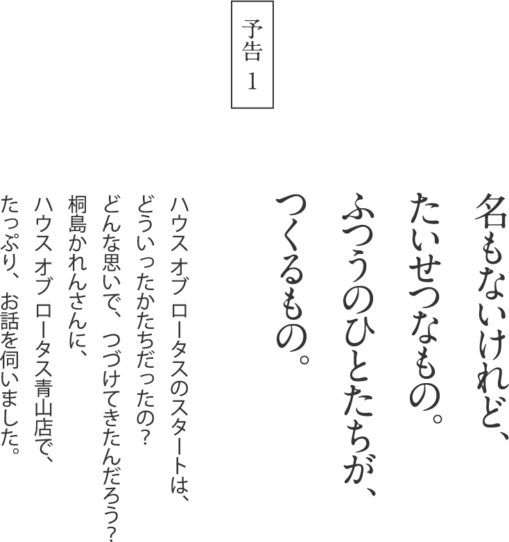
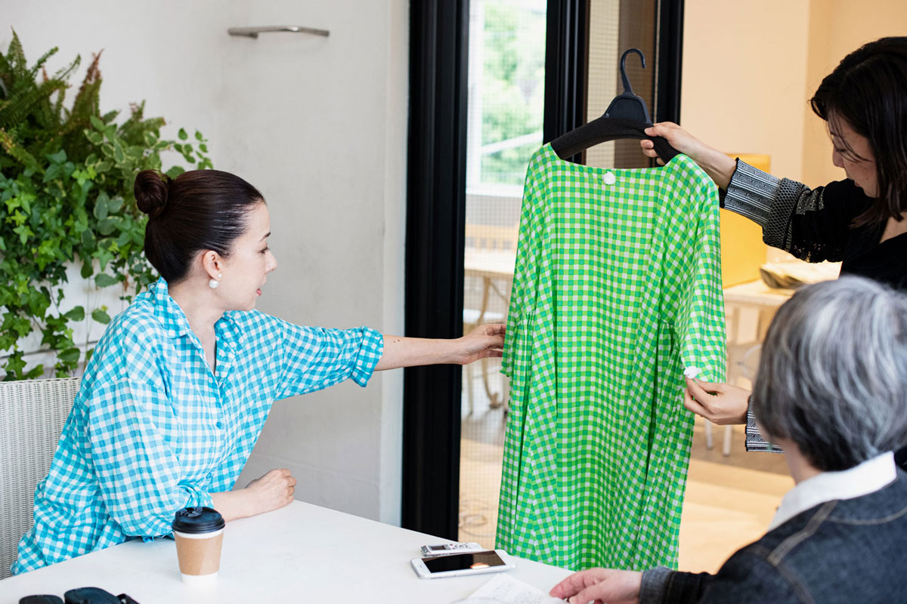
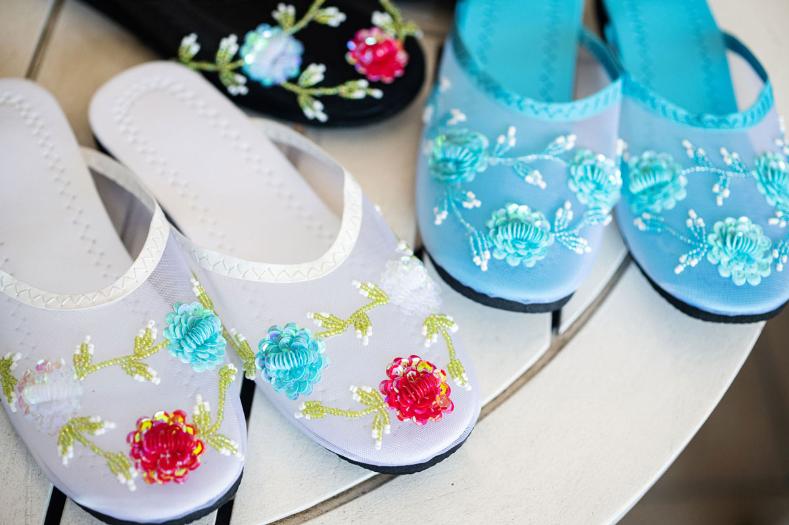

７月５日（金）午前11時
販売スタート
モデルの桐島かれんさんが
クリエイティブディレクターを務める
HOUSE OF LOTUS（ハウス オブ ロータス）。
「Happiness of Life」をコンセプトに、
さまざまな国の文化を巡って培った
かれんさんの美意識が、
「よそおう」「くらす」「もてなす」
という切り口で表現されています。
2019年４月の「生活のたのしみ展」では、
カラフルな服や小物をはじめ、
世界各国からあつめた雑貨などがならびました。
その中から、オリジナルの服と、
これからの季節に活躍する小物が
ほぼ日ストアに登場します。
毎日の暮らしに、彩りを添えてくれるものを、
ハウス オブ ロータスから。
この夏の毎日が、うんと楽しくなる、
うれしいアイテムがならびますよ。

自宅でお店を開いたことが、はじまり。
ハウス オブ ロータスのスタートは、
自宅で、しかも、年のうち何週間か、
イベントみたいなお店だったんです。
子育ての最中だったので、夏休みの間とか。
自宅で、しかも、年のうち何週間か、
イベントみたいなお店だったんです。
子育ての最中だったので、夏休みの間とか。
ものを売ったり、お店の経営なんてまったく何も知らずに、
とにかく始めてしまったんです。
「好き」という気持ちでやっている、ということだけは、
来てくださる方には伝わっていたかな。
こんなふうに、いくつも店舗があるような形になるとは、
もちろん想像もしなかったです。
とにかく始めてしまったんです。
「好き」という気持ちでやっている、ということだけは、
来てくださる方には伝わっていたかな。
こんなふうに、いくつも店舗があるような形になるとは、
もちろん想像もしなかったです。
いまみたいに、SNSもありませんでしたけれど、
なんとなく続いて‥‥。
少しずつお客様が増えていって、
何回目かでは、かなりの方が来てくださるようになって。
そのうち、
デパートでやってみませんかってお声がかかって、
伊勢丹でポップアップをやるようになったんですよ。
なんとなく続いて‥‥。
少しずつお客様が増えていって、
何回目かでは、かなりの方が来てくださるようになって。
そのうち、
デパートでやってみませんかってお声がかかって、
伊勢丹でポップアップをやるようになったんですよ。
もともとは雑貨だけだったんですけれど、
それなら、洋服も少しやってみようかなって。
その後、広尾に路面店を出したときに、
一番最初につくったのが、
このギンガムチェックのシリーズだったんです。
そうしているうちに、オリジナルの洋服もふえました。
雑貨の種類は、前とあまり変わらず、ですね。
それなら、洋服も少しやってみようかなって。
その後、広尾に路面店を出したときに、
一番最初につくったのが、
このギンガムチェックのシリーズだったんです。
そうしているうちに、オリジナルの洋服もふえました。
雑貨の種類は、前とあまり変わらず、ですね。

普通の人たちが、つくって、使うものが
アジアにはまだ残っているんです。
雑貨は、アジアのものが多いですね。
それは、アジアには手仕事が残ってるから。
それは、アジアには手仕事が残ってるから。
私は、身近なもの、
名のないものが大好きなんです。
そこがポイントなんですね。
いま、つくって、いま使ってるもの。
昔ながらの手法で身近な生活雑貨をつくっているのは、
どうしても固まってしまうんです、アジアやアフリカに。
名のないものが大好きなんです。
そこがポイントなんですね。
いま、つくって、いま使ってるもの。
昔ながらの手法で身近な生活雑貨をつくっているのは、
どうしても固まってしまうんです、アジアやアフリカに。
もちろん、ヨーロッパ、西洋の文化も美しくて、
素晴らしいものがいっぱいあります。
音楽、芸術、美術も、工芸品も、
輝かしいクリスタルガラスとか、優美な食器とか。
でも、それらは王侯貴族のために発展したもので、
多くは上流階級向けのものですよね。
素晴らしいものがいっぱいあります。
音楽、芸術、美術も、工芸品も、
輝かしいクリスタルガラスとか、優美な食器とか。
でも、それらは王侯貴族のために発展したもので、
多くは上流階級向けのものですよね。
庶民がつくってきた工芸もあるけれど、
生活と創作が隣り合わせだった
牧歌的な民芸は影をひそめましたね。
経済効率を追求して合理化が進むばかり。
生活と創作が隣り合わせだった
牧歌的な民芸は影をひそめましたね。
経済効率を追求して合理化が進むばかり。
そんな中でも驚くのは、
頑固に伝統を守り続けているアジアの少数民族。
祖母から母へ、母から娘へと受け継がれてきた
刺繍テクニックの手の込みようと華麗な色や形。
ものすごいんです。
日常の生活の中から生まれる「芸術」といってもいいほど。
頑固に伝統を守り続けているアジアの少数民族。
祖母から母へ、母から娘へと受け継がれてきた
刺繍テクニックの手の込みようと華麗な色や形。
ものすごいんです。
日常の生活の中から生まれる「芸術」といってもいいほど。
自分たちの生活を豊かにするために、
農作業の合間や、農作業のない冬の間とか、
そういう中でつくって、花開いたもの。
売り物ではなく家族の普段着や晴れ着を彩るためのもの。
アジアには、いろいろな少数民族が生活していて、
彼女たちがつくる織物や刺繍は本当に美しいです。
農作業の合間や、農作業のない冬の間とか、
そういう中でつくって、花開いたもの。
売り物ではなく家族の普段着や晴れ着を彩るためのもの。
アジアには、いろいろな少数民族が生活していて、
彼女たちがつくる織物や刺繍は本当に美しいです。
とはいえ、少数民族も近代化を避けられず、
ギリギリ残ってるものかもしれません。
ギリギリ残ってるものかもしれません。
たとえば、バブーシュ。
私、学生のときモロッコに行って、
男の人がみんなスターウォーズみたいな恰好をしていて、
足元を見ると、白とか黄色の革のバブーシュ。
そのときは、日本ではどこにも
バブーシュっていうものは売ってなかったんですよ。
本来、民族衣装の履き物ですから。
私、学生のときモロッコに行って、
男の人がみんなスターウォーズみたいな恰好をしていて、
足元を見ると、白とか黄色の革のバブーシュ。
そのときは、日本ではどこにも
バブーシュっていうものは売ってなかったんですよ。
本来、民族衣装の履き物ですから。
このバブーシュを、
室内でスリッパとして履いたら
絶対に素敵！と思って、仕入れて、
ハウス オブ ロータスで紹介することにしたんです。
そうしたら、すぐさま人気商品となり、
嬉しかったですね。
モロッコの履物である「くつ」を、
別の物「スリッパ」として見立てる。
物を本来あるべき姿ではなく、
別の使い方を考えるのが楽しいんです。
室内でスリッパとして履いたら
絶対に素敵！と思って、仕入れて、
ハウス オブ ロータスで紹介することにしたんです。
そうしたら、すぐさま人気商品となり、
嬉しかったですね。
モロッコの履物である「くつ」を、
別の物「スリッパ」として見立てる。
物を本来あるべき姿ではなく、
別の使い方を考えるのが楽しいんです。
まだモロッコでは、民族衣装を着る人たちが
バブーシュを履いていますけれど、
日本人が草履を履かなくなるのと一緒で、
モロッコでも、いつかは消えてしまうかもしれない。
バブーシュを履いていますけれど、
日本人が草履を履かなくなるのと一緒で、
モロッコでも、いつかは消えてしまうかもしれない。
だから、お土産ものになろうと、
外国人が目をつけようが、何でもいいから、
残っていってくれれば、職人さんも生き残るし、
それでもいいかな、と思うんです。
外国人が目をつけようが、何でもいいから、
残っていってくれれば、職人さんも生き残るし、
それでもいいかな、と思うんです。
でも私、それらを守ろうとしてるわけでもないんですよ。
なくなっちゃうのも、しょうがないと思う。
いろんなものが消えてなくなるのは当たり前のことです。
たまたま日本は、戦後の成長がすごく速かったから、
昔ながらの生活を一気にサッと捨てちゃったけど。
なくなっちゃうのも、しょうがないと思う。
いろんなものが消えてなくなるのは当たり前のことです。
たまたま日本は、戦後の成長がすごく速かったから、
昔ながらの生活を一気にサッと捨てちゃったけど。
そのペースが、その国々によって違うので、
アジアには、
ひと昔前の日本を感じられる国もあります。
日本がずいぶん前に捨ててしまったようなものが、
まだ生き残ってたりして。
そういう時間のギャップが
私から見ると新鮮だったりするので、
それらをちょこちょこと拾っているっていうだけなんです。
単純にかわいいっていう気持ち、
私のトキメキというだけなんですよ。
アジアには、
ひと昔前の日本を感じられる国もあります。
日本がずいぶん前に捨ててしまったようなものが、
まだ生き残ってたりして。
そういう時間のギャップが
私から見ると新鮮だったりするので、
それらをちょこちょこと拾っているっていうだけなんです。
単純にかわいいっていう気持ち、
私のトキメキというだけなんですよ。
私は、この世の中から
いずれ消え失せてしまうかもしれないものに
強く惹かれるのだなと思います。
それらを見つけ出して現代の暮らしに生かして、
未来にもつなげていけたらなって。
いずれ消え失せてしまうかもしれないものに
強く惹かれるのだなと思います。
それらを見つけ出して現代の暮らしに生かして、
未来にもつなげていけたらなって。
ちいさな雑貨を
広い世界の入り口に。
ハウス オブ ロータスの雑貨って、
安価なアジアのものが多いんです。
安価なアジアのものが多いんです。
日本人ってもう、なんでも手に入ってるじゃないですか。
高級ブランドの洗礼も、受けていますし。
でも何か、ときどき、胸がキュンとなったり、
気分を上げてくれるようなものってあるでしょう。
高級ブランドの洗礼も、受けていますし。
でも何か、ときどき、胸がキュンとなったり、
気分を上げてくれるようなものってあるでしょう。
しかも、プチプライスのもので、直感のまま買えて、
使いやすくて、かわいかったらいいじゃない、っていう。
暮らしに、ちょっと彩りを添えてくれるような、
そういうものをいっぱい紹介したいなって。
だから、アジアの安いバッグとか、
靴も、ちょっとおもしろくて、ちょっとかわいい、
キッチュなものを選んでいます。
使いやすくて、かわいかったらいいじゃない、っていう。
暮らしに、ちょっと彩りを添えてくれるような、
そういうものをいっぱい紹介したいなって。
だから、アジアの安いバッグとか、
靴も、ちょっとおもしろくて、ちょっとかわいい、
キッチュなものを選んでいます。

▲ベトナムでつくられた、ビーズ刺繍サンダル。¥3,024世界のいろいろな文化の紹介をしたいっていうことが
根っこにあるんですね。
なんとなく、私たちって西洋文化に憧れて
育ってきたところがあるじゃないですか。
根っこにあるんですね。
なんとなく、私たちって西洋文化に憧れて
育ってきたところがあるじゃないですか。
高級なブランドもいいけれど、
そうじゃなくても、かわいいもの、ステキなものがある。
そうじゃなくても、かわいいもの、ステキなものがある。
それは、世界中にあるんですよ。
逆にアートピースのように、素晴らしかったりします。
たとえば、アフリカのお面。
アートでもないのに、アートを超えている。
逆にアートピースのように、素晴らしかったりします。
たとえば、アフリカのお面。
アートでもないのに、アートを超えている。
インドネシアの島々でつくられている
木彫りの人形などもそうですし。
モロッコの砂漠で織る絨毯なども、
素晴らしいですね。
私にとってはアートピースです、すべてが。
木彫りの人形などもそうですし。
モロッコの砂漠で織る絨毯なども、
素晴らしいですね。
私にとってはアートピースです、すべてが。
名もなき職人や
普通の人たちの手から生み出された
日常の生活雑貨やハンドクラフト。
そういうものが、私はやっぱりすごく好き。
普通の人たちの手から生み出された
日常の生活雑貨やハンドクラフト。
そういうものが、私はやっぱりすごく好き。
ベトナムでつくられているプラカゴだって、
私にとっては、
普通のおじさんが長年使って
ボロボロになったものを見ると、
カッコいいなっていう感じがするんです。
私は、ものが好きというか、
その文化が好きなのかもしれないですね。
ものの奥に見えてくるもの。
私にとっては、
普通のおじさんが長年使って
ボロボロになったものを見ると、
カッコいいなっていう感じがするんです。
私は、ものが好きというか、
その文化が好きなのかもしれないですね。
ものの奥に見えてくるもの。
どういうふうに暮らしてるのかな、とか、
どんな食器使って食べたんだろうとか、
世界の人々がどういう生活をしているか、
というのに、すごく興味があるんです。
どんな食器使って食べたんだろうとか、
世界の人々がどういう生活をしているか、
というのに、すごく興味があるんです。
世界はどんどん小さくなり、
世界中、簡単に行けるようになったとはいえ、
そうそういつでも旅行に行けるわけでもなく。
私が集めてきたものを手にすることで、
旅した気分になってもらえたらいいな、
という気持ちがあります。
世界中、簡単に行けるようになったとはいえ、
そうそういつでも旅行に行けるわけでもなく。
私が集めてきたものを手にすることで、
旅した気分になってもらえたらいいな、
という気持ちがあります。
人生を豊かにしてくれるのは、
好奇心と想像力だと思います。
まだまだ知らない何かが世界には溢れています。
好奇心と想像力だと思います。
まだまだ知らない何かが世界には溢れています。
こういうものを使って生活してるのね、
というところから、
違う国の空気をちょっと感じてもらったり、
匂いを感じ取ってもらえたら。
というところから、
違う国の空気をちょっと感じてもらったり、
匂いを感じ取ってもらえたら。
それで、じゃあ、行ってみたいなって、
そこまで思ってくれると、さらにうれしいです。
世界は広いし、
おもしろいということを、伝えられたらいいですね。
そこまで思ってくれると、さらにうれしいです。
世界は広いし、
おもしろいということを、伝えられたらいいですね。
かれんさん、どうもありがとうございました。
次回の予告編は、ハウス オブ ロータスの夏の服について、
くわしくお伝えします。
2019-07-01（MON）